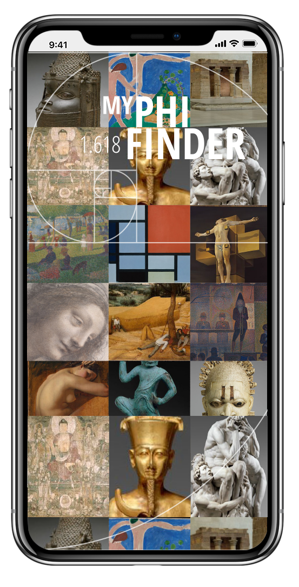
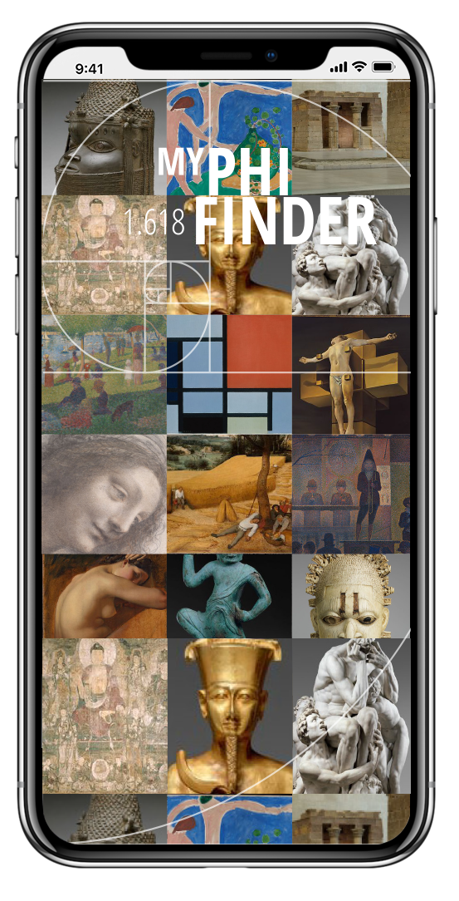

Use your smartphone camera to experience and interact with the Golden Ratio found in great works of art at the MET. Experience how either intuitively or by using Math, our greatest artists and craftspeople created their masterpieces in painting, architecture, sculpture and furniture.
The PhiFinder camera app for iPhone uses algothyms and augmented reality to bring to life how to see the Golden Ratio works with some of your favorite artwork at the MET.
The Golden Ratio can be fun and educational!
 
 View a wide range of specific Phi identified art
There are many names for the Golden Ratio. Its variously called the golden or divine ratio, mean or proportion. More commonly known as ‘PHI’ or a ratio of 1.618. Whether in art or in defining beauty, there is something pleasing about noticing certain proportions between elements commonly found in nature.
Watch this app can help you see how art and math collide.
My PHI FINDER
Snap photos to keep in your library of works of art showing the golden ratio for your reference to further enhance your experience by letting you “collect” and “save” objects from around the galleries.